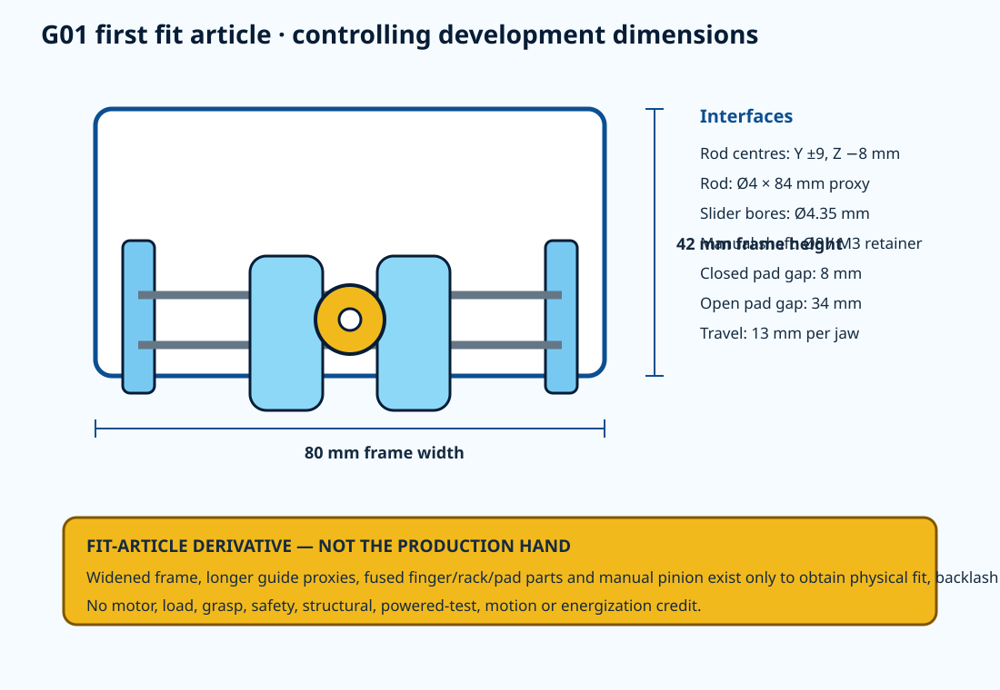
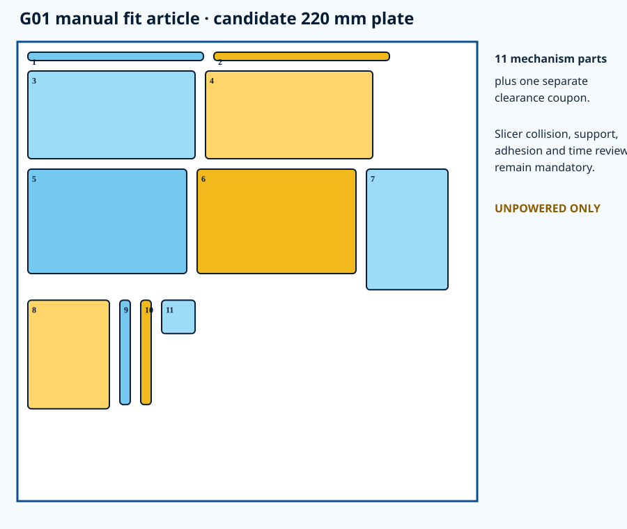

11
printable mechanism parts on one candidate 220 mm plate.
Project Button · HR-30 whole-body derivative
This eleven-part, one-to-one development fixture converts the authoritative G01 rack-and-pinion geometry into a physically retainable manual article. It exists to replace guesses with measurements before actuator or production hardware is released.
printable mechanism parts on one candidate 220 mm plate.
closed-to-open pad-gap screen.
slow manual cycles required for the first disposition.
all physical and acceptance fields remain unexecuted.


Complete ZIP · combined eleven-part STL · clearance coupon · hardware candidates · inspection record · issue record.
No G-code is included. The receiving printer must perform scale, support, adhesion, collision and time preflight.
Checkboxes are a browser convenience only; they are not engineering evidence. The CSV traveler must be completed and signed separately.
| ID | Unresolved | Evidence required |
|---|---|---|
| FFA-H01 | printer, material, slicer profile, support and print time not selected | receiving-printer preflight and calibration coupon |
| FFA-H02 | exact M3, guide-rod and collar products not selected or received | received identity, dimensions and fit results |
| FFA-H03 | zero article parts or coupons built | completed traveler, photos and measurements |
| FFA-H04 | fit-article frame and fused moving parts intentionally differ from production G01 | feed measured corrections into authoritative gripper CAD before any production release |
| FFA-H05 | actuator, horn, force, pinch, retention, load, endurance and failure behavior not tested | separate guarded design and physical validation after qualified review |